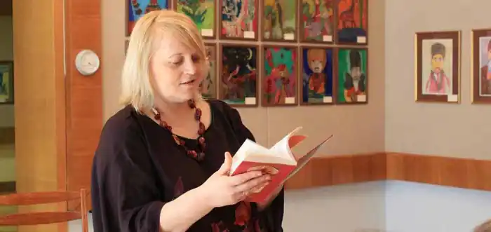

Марія Морозенко Миколаївна (*15 березня 1969, с. Малин, Рівненська область) — українська поетеса, член Національної спілки письменників України.
Марія Морозенко народилася 15 березня 1969 року в селі Малин Млинівського району Рівненської області у багатодітній сім'ї. Вона була дев'ятою дитиною із дванадцяти дітей. Коли Марії виповнилося дев'ять років трагічно загинув батько. Дванадцять дітей піднімала на ноги самотужки мама, Неоніла Андріївна, "Мати-героїня". Освіта: вища, закінчила філологічний факультет Черкаського наіонального університету ім. Б. Хмельницького (2005). Літературний редактор, керівник та ведуча культурологічної студії "Духовність української родини" при Національному музеї літератури. Марія Морозенко автор збірок "Зоряні перевесла" — 1999 рік; "Елегія любові" — 2006 рік; історичної поеми "Княгиня Ольга" — 2004 рік, а також драм "Марія Магдалина", "Вічність", "Князь Святослав". Автор дитячих казок: "Про країну ласунів", навчальних серій "Хто це?", "Що це?", віршованих казок "У зеленому ярочку", "Незвичайні пригоди Чока…", серії пізнавальних загадок, літературного переказу казки "Дванадцять місяців".
Творчі відзнаки: віршована казка "Про незвичайні пригоди хлопчика Чока…" (видавництво "Преса України") відзначена золотою нагородою 3-ої Всеукраїнської виставки-ярмарку "Буквиця", лауреат конкурсу "Рукомесло" в номінації "Твори для дітей", етюд "Вони і лелеки" увійшов у сотню кращих українських новел конкурсу "Сила малого", рукопис повісті "Великий характерник Іван Сірко" здобув перемогу в конкурсі "Українська сила"; ювілейна медаль "90-річчя карного розшуку України", грамоти численних пісенних фестивалів та міжнародних конкурсів. Українська дитяча письменниця, літературна редакторка та філологиня Марія Морозенко померла у 54 роки. це сталося 9 жовтня 2023 року. Пізніше про смерть письменниці написала й журналістка Ольга Мусафірова: "Учора, в неділю, вона в останній раз привезла до військового госпіталю волонтерський недільний обід, як возила всі місяці цієї страшної війни. І хлопці, як завжди, дякували їй за материнську турботу і усміхалися, а вона їм казала — "До зустрічі!".